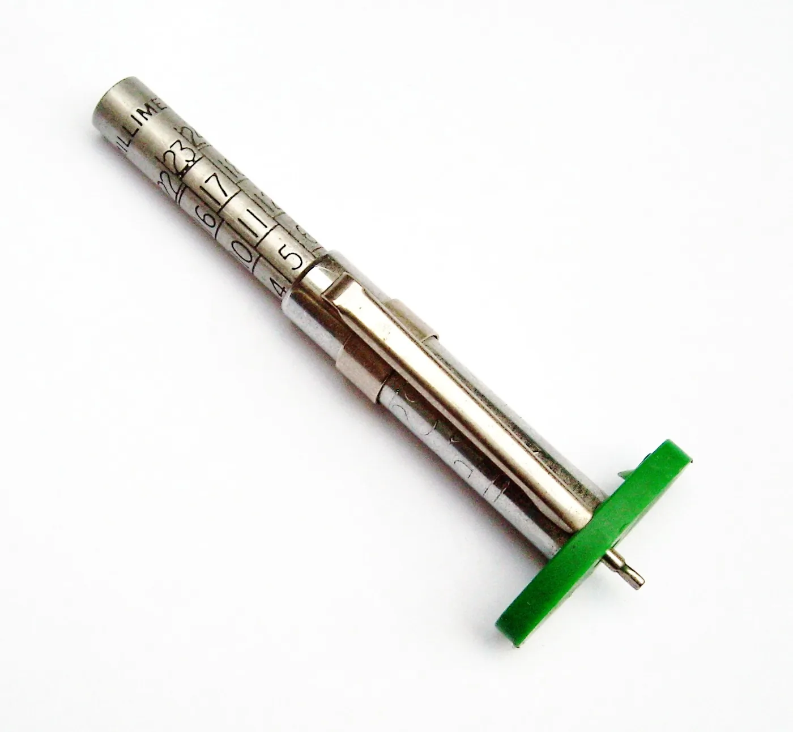

Chapter 6.7 already explained how to read wear patterns for what they reveal about pressure history, riding style, and alignment. This chapter is a level below that diagnostic reading: the actual routine inspection habits — tread depth, sidewall condition, valve stem check, age — that a maintenance schedule should include to catch a tyre problem before Chapter 6.7's diagnostic reading is even needed.
Chapter 10.4 closed by naming tyre maintenance and inspection as this chapter's subject, the connection between the drivetrain and the road. This chapter covers it.
Tread Depth: A Direct Measure of Chapter 6.6's Water-Displacement Capacity
Chapter 6.6 established that tread grooves exist to displace water and prevent hydroplaning, and tread depth is simply how much groove volume remains available to do that job. Measuring tread depth at multiple points across the tyre's width, not just the center, matters specifically because Chapter 6.3 showed the contact patch spending different amounts of time on different parts of the tread depending on riding style — a tyre can show healthy depth at the center while being dangerously close to its wear limit at the shoulders a hard-cornering rider actually uses, or the reverse for a rider who rides mostly upright.
Sidewall Cracking and UV or Ozone Degradation
Rubber compound, the same material Chapter 6.6 described trading grip against durability through hardness, also degrades chemically over time from ultraviolet exposure and ozone in the air, independent of how many kilometers the tyre has actually covered. Fine cracking in the sidewall, sometimes called weathering or ozone cracking, is a sign of this chemical aging process, and it's a genuine safety concern distinct from tread wear — a tyre with excellent remaining tread depth can still be structurally compromised by sidewall cracking, particularly on a motorcycle stored outdoors or ridden infrequently over several years.
A tyre's condition isn't fully captured by tread depth alone — sidewall cracking from UV and ozone exposure can compromise a tyre's structural integrity regardless of how much tread remains, which is why age, not just distance covered, belongs in a real inspection routine.

A tread depth gauge — the actual tool behind this chapter's center, mid-tread, and shoulder measurements, small enough to carry in a basic kit. Photo: Simon Speed, CC0, via Wikimedia Commons.
The Valve Stem: A Small Component Guarding Chapter 6.5's Whole System
Chapter 6.5 established tyre pressure as directly setting contact patch size, heat, and grip — the entire foundation that chapter built its argument on. All of that depends on the valve stem holding a reliable seal, and a cracked, aged, or loose valve stem can produce a slow, easy-to-miss pressure leak that gradually degrades every one of Chapter 6.5's relationships without an obviously visible cause. Checking valve stem condition alongside pressure itself, not just topping up pressure and assuming the reading is stable, closes a real gap a pressure-only check can miss.
A Common Misconception, Cleared Up Early
It's a common assumption that a tyre is safe to keep using as long as it has visible tread remaining, treating tread depth as the single relevant measurement. Sidewall cracking, valve stem condition, and tyre age each represent a real failure mode tread depth alone doesn't capture, and a genuinely thorough tyre inspection checks all of them together — a tyre well within its tread-wear limit can still be the least safe component on the motorcycle if these other factors have been overlooked.
Where This Leads
Tyres connect the motorcycle to the road; the brakes are what actually slow it down again. Chapter 10.6 turns to brake maintenance and fluid service next.
Key Concepts to Remember
- Tread depth should be measured at multiple points across the tyre's width, since contact patch use varies with riding style and can wear unevenly.
- Sidewall cracking from UV and ozone exposure is a chemical aging process independent of tread wear, and a real safety concern on its own.
- Valve stem condition should be checked alongside pressure itself, since a degraded stem can produce a slow leak that undermines every pressure-dependent relationship this book has described.
Cross-References
| ← Ch. 6.7 | Explained diagnostic reading of tyre wear patterns; this chapter covers the routine inspection habits that catch problems before that diagnostic reading is needed. |
| ← Ch. 6.6 | Established tread grooves displacing water; this chapter shows tread depth as the direct, measurable remaining capacity for that same job. |
| ← Ch. 6.5 | Established tyre pressure setting contact patch, heat, and grip; this chapter shows valve stem condition as the small component protecting that entire system. |
| → Ch. 10.6 | Covers brake maintenance and fluid service, the system that actually slows the motorcycle down. |